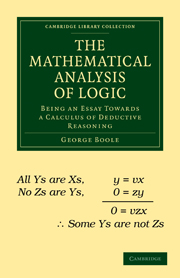
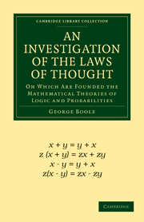

| Invented Boolean Algebra: 1847 | Invented Symbolic Logic: 1854 |
|---|---|
|  |  |
|
An Essay to lead to a calculus of deductive reasoning.
Explained the new branch of math: Boolean Algebra. |
Explained that algebra can be adopted to logic instead of math. |